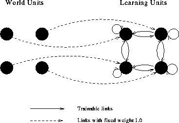

In Hebbian learning weights between learning nodes are adjusted so that each weight better represents the relationship between the nodes. Nodes which tend to be positive or negative at the same time will have strong positive weights while those which tend to be opposite will have strong negative weights. Nodes which are uncorrelated will have weights near zero.
The general formula for Hebbian learning is
where:
